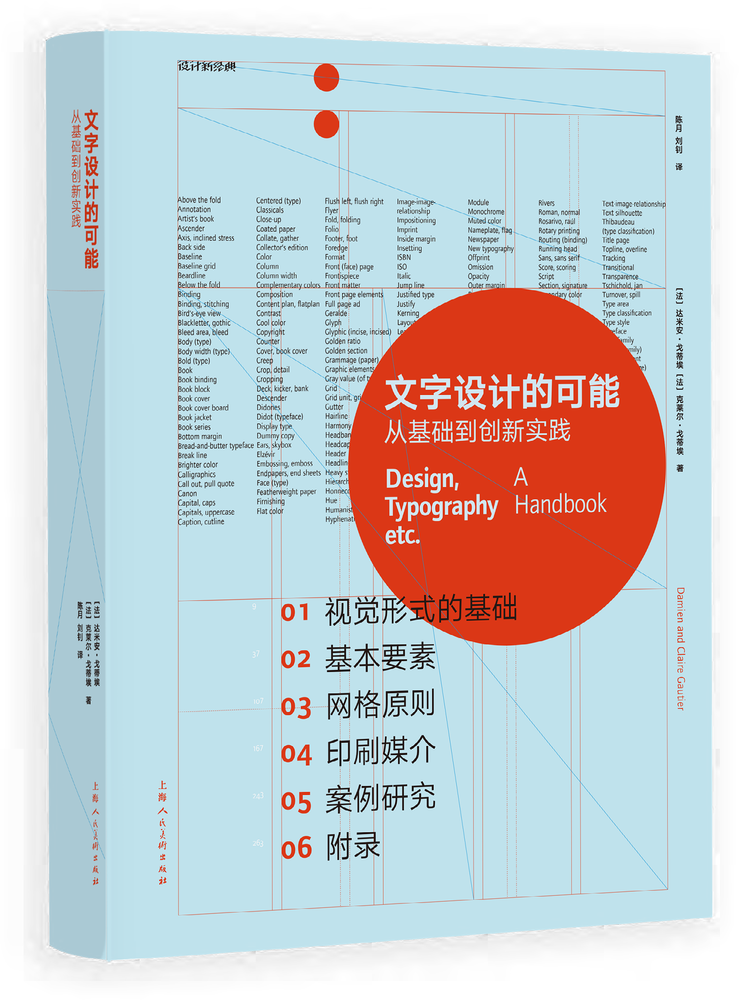
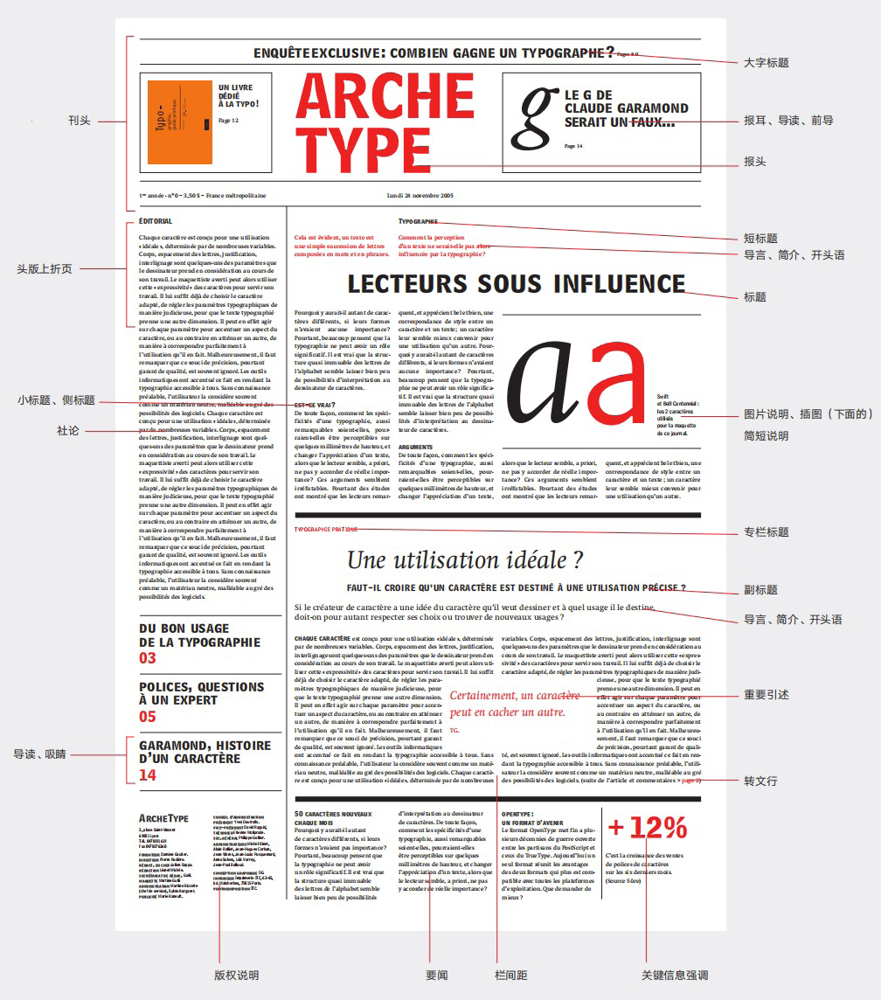
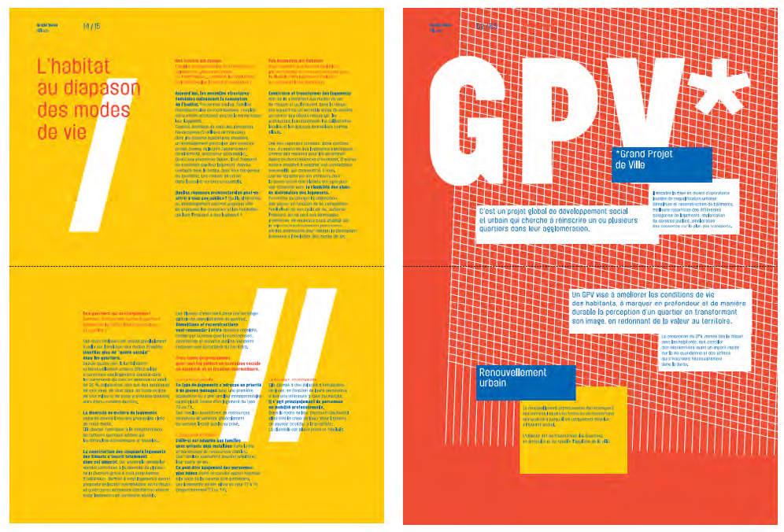
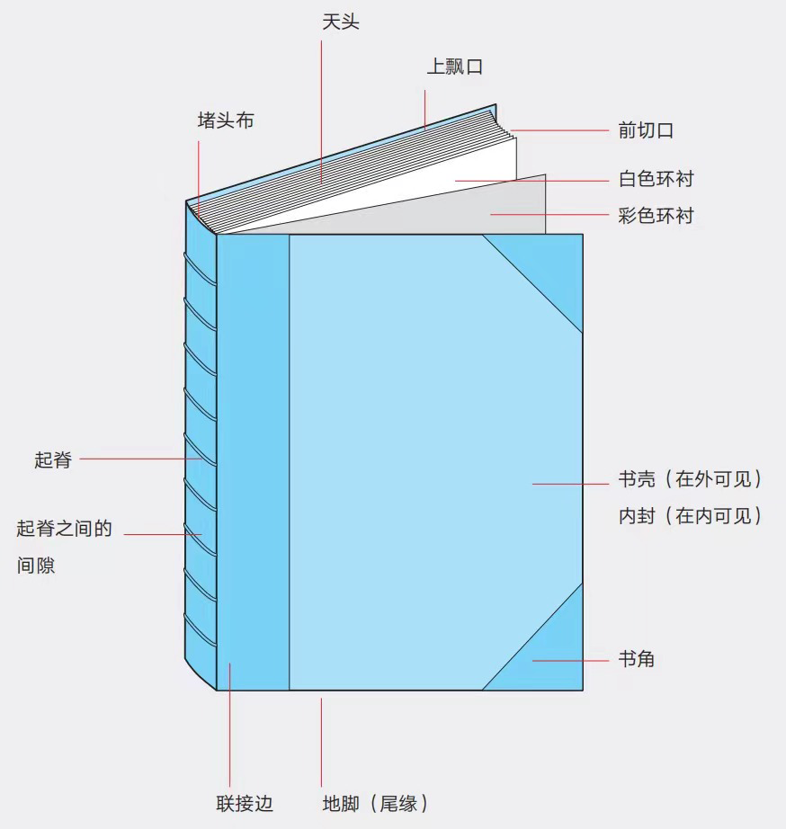

Book Translation图书翻译
Design, Typography, etc.: A Handbook文字设计的可能：从基础到创新实践
A comprehensive handbook on print typography, with practical notes, illustrative application examples, and an extensive bibliography.
一部关于印刷字体设计的综合性手册，包含实用笔记、图文并茂的应用案例与详尽的参考书目。



